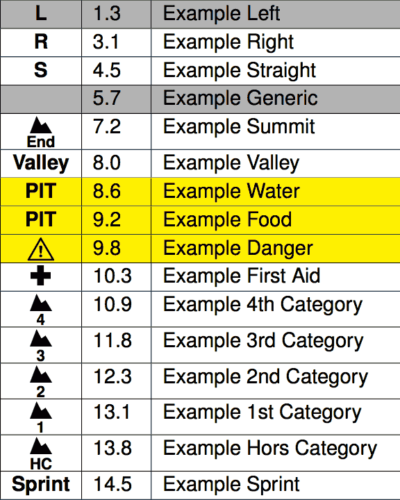
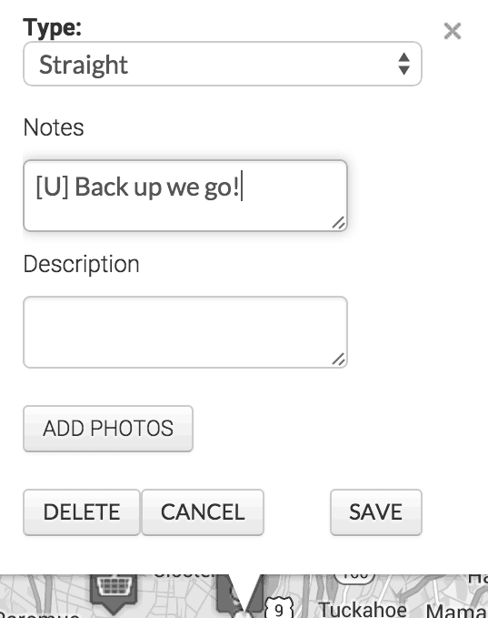
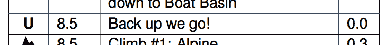
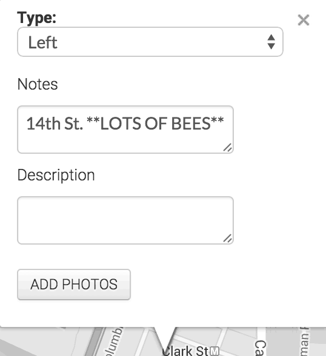
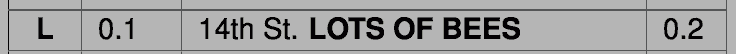

Roboviva works best when the cuesheet entries in the RideWithGPS route have been cleaned up a bit by hand. A good resource for learning how to do this is located here. With a small amount of cleanup, it's almost always possible to generate a near-flawless cuesheet.
Roboviva supports all the entry types RideWithGPS offers:

Feel free to mark pit stops, big climbs, dangers on the road--anything RideWithGPS supports!
If the above types aren't sufficient, you can specify your own entry type by putting it in brackets at the start of the cuesheet entry. For example, to mark a U-Turn with a "U", just put "[U]" at the start of the entry:

This will then override the description that'd normally go there:

Roboviva supports *emphasis* and **strong emphasis** in cuesheet entries, if you need to make something stand out:

becomes:

Roboviva only works on RideWithGPS routes that are public. If you're running into problems formatting a route, make sure it's not marked as private. If it is, you can make a copy of the route under your own account, and make that public.